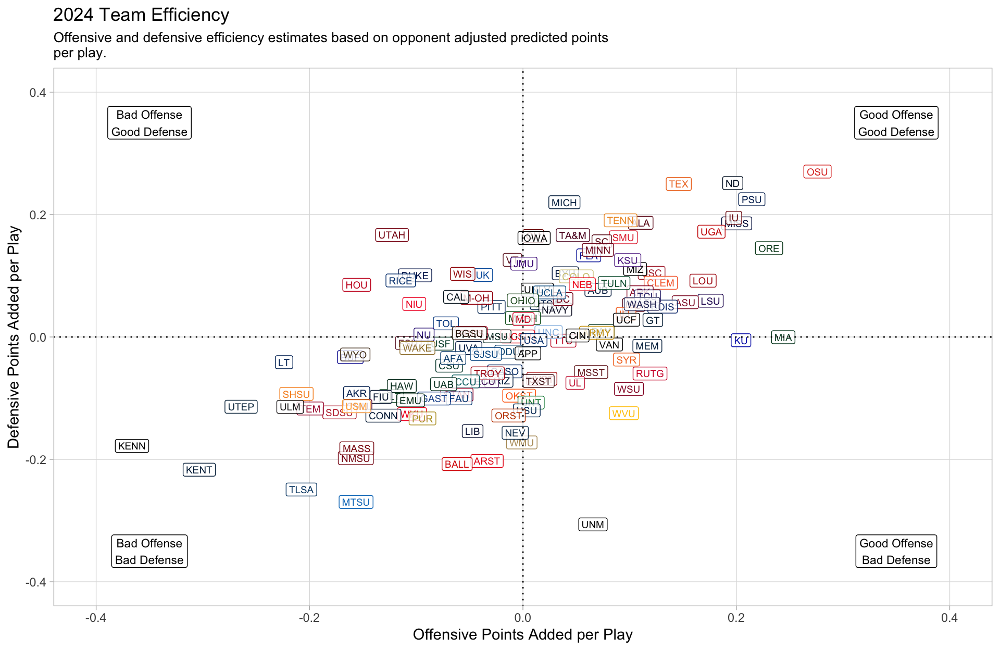
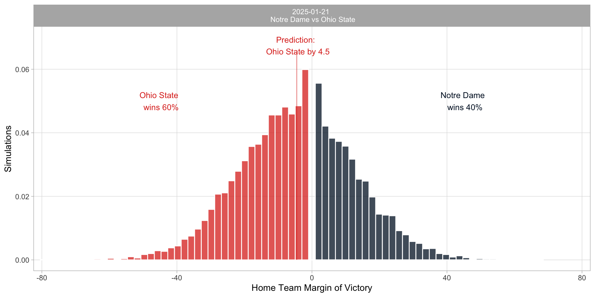

| sex | totchol | age | sysbp | diabp | smoker | bmi | heartrte | glucose | ten_year_chd |
|---|---|---|---|---|---|---|---|---|---|
| male | 301 | 58 | 170.0 | 96.0 | 0 | 27.69 | 60 | 76 | 0 |
| female | 245 | 64 | 165.0 | 88.0 | 1 | 18.04 | 70 | 71 | 0 |
| male | 178 | 63 | 155.0 | 79.0 | 0 | 25.90 | 55 | 61 | 0 |
| male | 297 | 46 | 133.0 | 92.0 | 0 | 25.98 | 69 | 64 | 0 |
| female | 313 | 59 | 186.5 | 99.0 | 0 | 25.65 | 72 | 84 | 0 |
| male | 193 | 53 | 142.0 | 89.0 | 0 | 29.56 | 70 | 78 | 0 |
| male | 264 | 63 | 110.0 | 74.0 | 0 | 27.58 | 96 | 87 | 0 |
| male | 252 | 67 | 132.0 | 79.0 | 0 | 27.42 | 74 | 75 | 0 |
| female | 291 | 46 | 112.0 | 78.0 | 1 | 23.38 | 80 | 89 | 1 |
| male | 184 | 43 | 127.5 | 81.0 | 1 | 28.31 | 108 | 75 | 0 |
| female | 220 | 54 | 142.5 | 83.5 | 0 | 25.09 | 72 | 84 | 0 |
| female | 240 | 58 | 90.0 | 59.0 | 0 | 23.45 | 75 | 73 | 1 |
| male | 227 | 49 | 126.0 | 70.0 | 1 | 25.39 | 75 | 77 | 0 |
| female | 176 | 45 | 108.0 | 66.0 | 1 | 20.98 | 60 | 73 | 0 |
| female | 219 | 54 | 138.0 | 84.0 | 1 | 28.23 | 93 | 125 | 0 |
| male | 196 | 52 | 126.0 | 80.0 | 0 | 22.32 | 104 | 74 | 0 |
| female | 195 | 52 | 152.0 | 86.0 | 1 | 23.96 | 55 | 84 | 0 |
| female | 353 | 54 | 143.0 | 96.0 | 1 | 22.90 | 96 | 79 | 1 |
| male | 178 | 52 | 125.0 | 74.0 | 1 | 21.91 | 80 | 81 | 0 |
| female | 238 | 60 | 176.0 | 98.0 | 0 | 34.09 | 92 | 203 | 1 |
| male | 239 | 52 | 116.0 | 70.0 | 1 | 21.78 | 85 | 79 | 0 |
| female | 282 | 64 | 158.0 | 105.0 | 0 | 24.37 | 75 | 71 | 0 |
| male | 258 | 67 | 162.0 | 99.0 | 1 | 22.97 | 80 | 73 | 1 |
| female | 338 | 56 | 190.0 | 97.0 | 0 | 26.10 | 75 | 83 | 0 |
| female | 213 | 41 | 112.0 | 73.0 | 0 | 24.81 | 62 | 74 | 0 |
| female | 344 | 56 | 119.0 | 82.0 | 0 | 26.82 | 80 | 105 | 0 |
| female | 265 | 68 | 155.0 | 76.0 | 0 | 30.65 | 78 | 67 | 1 |
| female | 285 | 46 | 114.5 | 80.0 | 0 | 28.05 | 79 | 64 | 0 |
| female | — | 52 | 141.0 | 92.0 | 0 | 23.29 | 100 | 82 | 0 |
| male | 209 | 50 | 113.0 | 69.0 | 1 | 25.08 | 95 | 78 | 0 |
| female | 210 | 58 | 160.0 | 90.0 | 1 | 28.59 | 90 | — | 1 |
| female | 268 | 42 | 111.5 | 67.5 | 1 | 31.89 | 80 | 48 | 0 |
| male | 328 | 45 | 125.0 | 80.0 | 1 | 21.82 | 87 | 103 | 0 |
| female | 322 | 59 | 162.0 | 98.0 | 1 | 27.82 | 69 | 102 | 0 |
| male | 197 | 58 | 180.0 | 89.0 | 0 | 25.88 | 54 | 77 | 0 |
| female | 218 | 61 | 128.0 | 82.0 | 1 | 35.22 | 90 | 64 | 1 |
| female | 236 | 51 | 107.0 | 74.0 | 0 | 25.51 | 80 | 77 | 0 |
| female | 283 | 39 | 159.0 | 105.0 | 0 | 30.06 | 80 | 76 | 0 |
| male | 254 | 51 | 136.5 | 83.0 | 0 | 21.45 | 75 | — | 0 |
| female | 239 | 56 | 129.0 | 74.0 | 1 | 25.40 | 76 | 75 | 0 |
| female | 244 | 51 | 110.0 | 70.0 | 0 | 16.95 | 76 | 60 | 0 |
| female | 273 | 62 | 150.5 | 97.0 | 0 | 22.01 | 76 | 74 | 0 |
| female | 246 | 54 | 107.0 | 72.0 | 0 | 23.68 | 80 | 82 | 0 |
| male | — | 74 | 110.0 | 68.0 | 1 | 20.41 | 60 | — | 1 |
| female | 266 | 55 | 107.0 | 70.0 | 0 | 24.51 | 72 | 77 | 0 |
| male | 225 | 51 | 118.0 | 78.0 | 1 | 23.48 | 68 | 65 | 0 |
| male | 288 | 45 | 124.0 | 81.0 | 1 | 27.94 | 69 | 118 | 0 |
| male | 182 | 46 | 120.0 | 78.0 | 1 | 20.23 | 75 | 85 | 0 |
| male | 202 | 50 | 189.0 | 121.0 | 1 | 33.81 | 65 | 72 | 1 |
| female | 248 | 43 | 135.0 | 83.0 | 1 | 22.19 | 70 | 63 | 0 |
The Data You Don’t Have
Where is the value in data science?
President Roosevelt died on April 12, 1945, at the age of 63, from cerebral hemorrhage with a blood pressure of 300/190 mmHg.


Expected Points Before Play: 1.80
Expected Points After Play: 7.00
Expected Points Added: 5.20
Expected Points Before Play: 0.67
Expected Points After Play: 1.80
Expected Points Added: 1.13
Expected Points Before Play: 0.20
Expected Points After Play: -3.25
Expected Points Added: -3.45


| Season | Week | Rank | Logo | Team | Team Score |
Efficiency
|
|
|---|---|---|---|---|---|---|---|
| Offense | Defense | ||||||
| 2024 | 20 | 1 |  |
Ohio State | 31.79 | 0.272 | 0.261 |
| 2024 | 20 | 2 |  |
Notre Dame | 27.27 | 0.186 | 0.264 |
| 2024 | 20 | 3 |  |
Penn State | 24.99 | 0.203 | 0.236 |
| 2024 | 20 | 4 |  |
Ole Miss | 24.43 | 0.202 | 0.187 |
| 2024 | 20 | 5 |  |
Texas | 23.77 | 0.155 | 0.257 |
| 2024 | 20 | 6 |  |
Indiana | 23.26 | 0.198 | 0.193 |
| 2024 | 20 | 7 |  |
Georgia | 22.97 | 0.181 | 0.173 |
| 2024 | 20 | 8 |  |
Oregon | 22.81 | 0.230 | 0.144 |
| 2024 | 20 | 9 |  |
Alabama | 21.18 | 0.111 | 0.188 |
| 2024 | 20 | 10 |  |
Tennessee | 19.32 | 0.092 | 0.192 |
| 2024 | 20 | 11 |  |
Louisville | 16.76 | 0.170 | 0.092 |
| 2024 | 20 | 12 |  |
Michigan | 16.40 | 0.038 | 0.220 |
| 2024 | 20 | 13 |  |
SMU | 16.06 | 0.096 | 0.163 |
| 2024 | 20 | 14 |  |
Miami | 15.83 | 0.245 | 0.001 |
| 2024 | 20 | 15 |  |
South Carolina | 15.39 | 0.075 | 0.157 |
| 2024 | 20 | 16 |  |
Texas A&M | 14.72 | 0.049 | 0.168 |
| 2024 | 20 | 17 |  |
USC | 14.65 | 0.123 | 0.104 |
| 2024 | 20 | 18 |  |
LSU | 14.59 | 0.177 | 0.060 |
| 2024 | 20 | 19 |  |
Florida | 14.19 | 0.063 | 0.135 |
| 2024 | 20 | 20 |  |
Missouri | 13.96 | 0.106 | 0.112 |
| 2024 | 20 | 21 |  |
Minnesota | 13.64 | 0.071 | 0.142 |
| 2024 | 20 | 22 |  |
Clemson | 13.64 | 0.130 | 0.090 |
| 2024 | 20 | 23 |  |
Kansas State | 13.39 | 0.099 | 0.127 |
| 2024 | 20 | 24 |  |
Arizona State | 12.47 | 0.154 | 0.058 |
| 2024 | 20 | 25 |  |
Arkansas | 12.23 | 0.111 | 0.075 |
| 2024 | 20 | 26 |  |
Oklahoma | 11.99 | 0.011 | 0.166 |
| 2024 | 20 | 27 |  |
Kansas | 11.84 | 0.205 | −0.004 |
| 2024 | 20 | 28 |  |
Boise State | 11.54 | 0.133 | 0.049 |
| 2024 | 20 | 29 |  |
Iowa State | 11.29 | 0.105 | 0.053 |
| 2024 | 20 | 30 |  |
Iowa | 11.19 | 0.010 | 0.162 |
| 2024 | 20 | 31 |  |
TCU | 11.18 | 0.117 | 0.066 |
| 2024 | 20 | 32 |  |
Auburn | 11.03 | 0.072 | 0.078 |
| 2024 | 20 | 33 |  |
Illinois | 10.47 | 0.097 | 0.037 |
| 2024 | 20 | 34 |  |
Tulane | 10.44 | 0.086 | 0.089 |
| 2024 | 20 | 35 |  |
Washington | 10.41 | 0.112 | 0.054 |
| 2024 | 20 | 36 |  |
BYU | 10.22 | 0.041 | 0.105 |
| 2024 | 20 | 37 |  |
Georgia Tech | 10.05 | 0.123 | 0.028 |
| 2024 | 20 | 38 |  |
Virginia Tech | 9.74 | −0.009 | 0.127 |
| 2024 | 20 | 39 |  |
Colorado | 9.65 | 0.051 | 0.100 |
| 2024 | 20 | 40 |  |
Nebraska | 8.91 | 0.055 | 0.086 |
| 2024 | 20 | 41 |  |
Baylor | 8.35 | 0.074 | 0.011 |
| 2024 | 20 | 42 |  |
Vanderbilt | 8.34 | 0.083 | −0.011 |
| 2024 | 20 | 43 |  |
James Madison | 7.70 | 0.002 | 0.120 |
| 2024 | 20 | 44 |  |
Kentucky | 7.65 | −0.036 | 0.103 |
| 2024 | 20 | 45 |  |
Memphis | 7.54 | 0.117 | −0.014 |
| 2024 | 20 | 46 |  |
UCF | 7.30 | 0.098 | 0.029 |
| 2024 | 20 | 47 |  |
UNLV | 6.81 | 0.014 | 0.078 |
| 2024 | 20 | 48 |  |
Rutgers | 6.63 | 0.119 | −0.059 |
| 2024 | 20 | 49 |  |
UT San Antonio | 6.49 | 0.023 | 0.056 |
| 2024 | 20 | 50 |  |
Navy | 6.46 | 0.032 | 0.045 |
| 2024 | 20 | 51 |  |
Boston College | 6.25 | 0.038 | 0.063 |
| 2024 | 20 | 52 |  |
UCLA | 6.06 | 0.026 | 0.073 |
| 2024 | 20 | 53 |  |
Army | 5.48 | 0.071 | 0.007 |
| 2024 | 20 | 54 |  |
Syracuse | 5.18 | 0.098 | −0.036 |
| 2024 | 20 | 55 |  |
Wisconsin | 4.84 | −0.056 | 0.102 |
| 2024 | 20 | 56 |  |
Ohio | 4.27 | 0.000 | 0.060 |
| 2024 | 20 | 57 |  |
Utah | 4.14 | −0.122 | 0.167 |
| 2024 | 20 | 58 |  |
Texas Tech | 4.13 | 0.039 | −0.005 |
| 2024 | 20 | 59 |  |
Cincinnati | 3.93 | 0.052 | 0.003 |
| 2024 | 20 | 60 |  |
North Carolina | 3.55 | 0.025 | 0.009 |
| 2024 | 20 | 61 |  |
Pittsburgh | 3.34 | −0.029 | 0.050 |
| 2024 | 20 | 62 |  |
Mississippi State | 3.23 | 0.066 | −0.055 |
| 2024 | 20 | 63 |  |
Miami (OH) | 2.86 | −0.042 | 0.064 |
| 2024 | 20 | 64 |  |
Duke | 2.84 | −0.100 | 0.102 |
| 2024 | 20 | 65 |  |
Marshall | 2.68 | 0.000 | 0.031 |
| 2024 | 20 | 66 |  |
California | 2.32 | −0.062 | 0.066 |
| 2024 | 20 | 67 |  |
Washington State | 2.11 | 0.100 | −0.084 |
| 2024 | 20 | 68 |  |
NC State | 2.11 | −0.004 | 0.002 |
| 2024 | 20 | 69 |  |
West Virginia | 1.93 | 0.096 | −0.124 |
| 2024 | 20 | 71 |  |
Maryland | 1.85 | 0.001 | 0.028 |
| 2024 | 20 | 72 |  |
South Alabama | 1.75 | 0.011 | −0.005 |
| 2024 | 20 | 73 |  |
Michigan State | 0.96 | −0.025 | 0.001 |
| 2024 | 20 | 74 |  |
Louisiana | 0.63 | 0.050 | −0.074 |
| 2024 | 20 | 75 |  |
Old Dominion | 0.01 | −0.013 | −0.023 |
| 2024 | 20 | 76 |  |
Jacksonville State | −0.81 | 0.019 | −0.068 |
| 2024 | 20 | 77 |  |
Virginia | −0.84 | −0.049 | −0.018 |
| 2024 | 20 | 78 |  |
Toledo | −1.31 | −0.072 | 0.023 |
| 2024 | 20 | 79 |  |
Rice | −1.39 | −0.114 | 0.093 |
| 2024 | 20 | 80 |  |
Appalachian State | −1.64 | 0.005 | −0.026 |
| 2024 | 20 | 81 |  |
Northern Illinois | −1.66 | −0.101 | 0.054 |
| 2024 | 20 | 82 |  |
Georgia Southern | −1.68 | −0.016 | −0.055 |
| 2024 | 20 | 83 |  |
Arizona | −1.92 | −0.022 | −0.071 |
| 2024 | 20 | 84 |  |
Texas State | −1.98 | 0.015 | −0.071 |
| 2024 | 20 | 85 |  |
Houston | −2.05 | −0.155 | 0.086 |
| 2024 | 20 | 86 |  |
South Florida | −2.11 | −0.076 | −0.010 |
| 2024 | 20 | 87 |  |
Florida State | −2.16 | −0.105 | −0.010 |
| 2024 | 20 | 88 |  |
Fresno State | −2.29 | −0.048 | 0.007 |
| 2024 | 20 | 89 |  |
Bowling Green | −2.40 | −0.049 | 0.006 |
| 2024 | 20 | 90 |  |
Northwestern | −2.48 | −0.094 | 0.004 |
| 2024 | 20 | 91 |  |
San José State | −2.56 | −0.034 | −0.027 |
| 2024 | 20 | 92 |  |
Oklahoma State | −3.07 | −0.003 | −0.095 |
| 2024 | 20 | 93 |  |
East Carolina | −3.19 | −0.035 | −0.071 |
| 2024 | 20 | 94 |  |
Troy | −3.53 | −0.032 | −0.059 |
| 2024 | 20 | 95 |  |
Wake Forest | −3.88 | −0.098 | −0.017 |
| 2024 | 20 | 96 |  |
North Texas | −3.96 | 0.008 | −0.106 |
| 2024 | 20 | 97 |  |
Utah State | −4.43 | 0.004 | −0.119 |
| 2024 | 20 | 98 |  |
Colorado State | −4.96 | −0.068 | −0.046 |
| 2024 | 20 | 99 |  |
Air Force | −5.13 | −0.065 | −0.034 |
| 2024 | 20 | 100 |  |
Coastal Carolina | −5.14 | −0.053 | −0.072 |
| 2024 | 20 | 101 |  |
Stanford | −5.19 | −0.060 | −0.094 |
| 2024 | 20 | 102 |  |
Oregon State | −5.57 | −0.013 | −0.128 |
| 2024 | 20 | 103 |  |
Western Michigan | −5.84 | −0.001 | −0.172 |
| 2024 | 20 | 104 |  |
UAB | −6.27 | −0.074 | −0.076 |
| 2024 | 20 | 105 |  |
Nevada | −7.22 | −0.007 | −0.156 |
| 2024 | 20 | 106 |  |
Buffalo | −8.01 | −0.161 | −0.032 |
| 2024 | 20 | 107 |  |
Florida Atlantic | −8.65 | −0.059 | −0.100 |
| 2024 | 20 | 108 |  |
Western Kentucky | −9.25 | −0.103 | −0.125 |
| 2024 | 20 | 109 |  |
Charlotte | −9.30 | −0.123 | −0.096 |
| 2024 | 20 | 110 |  |
Liberty | −9.30 | −0.046 | −0.153 |
| 2024 | 20 | 111 |  |
Wyoming | −9.44 | −0.156 | −0.028 |
| 2024 | 20 | 112 |  |
Arkansas State | −9.65 | −0.033 | −0.202 |
| 2024 | 20 | 113 |  |
Georgia State | −9.73 | −0.083 | −0.100 |
| 2024 | 20 | 114 |  |
Hawai'i | −9.81 | −0.113 | −0.079 |
| 2024 | 20 | 115 |  |
Eastern Michigan | −9.81 | −0.105 | −0.103 |
| 2024 | 20 | 116 |  |
New Mexico | −10.05 | 0.067 | −0.305 |
| 2024 | 20 | 117 |  |
Purdue | −10.53 | −0.094 | −0.135 |
| 2024 | 20 | 118 |  |
Akron | −11.83 | −0.156 | −0.091 |
| 2024 | 20 | 119 |  |
Florida International | −11.92 | −0.132 | −0.097 |
| 2024 | 20 | 120 |  |
Central Michigan | −12.09 | −0.154 | −0.112 |
| 2024 | 20 | 121 |  |
Louisiana Tech | −12.76 | −0.223 | −0.040 |
| 2024 | 20 | 122 |  |
Connecticut | −12.77 | −0.130 | −0.128 |
| 2024 | 20 | 123 |  |
San Diego State | −13.12 | −0.171 | −0.122 |
| 2024 | 20 | 124 |  |
Southern Mississippi | −13.59 | −0.155 | −0.112 |
| 2024 | 20 | 125 |  |
Ball State | −13.61 | −0.061 | −0.207 |
| 2024 | 20 | 126 |  |
Sam Houston State | −15.11 | −0.211 | −0.092 |
| 2024 | 20 | 127 |  |
Temple | −15.73 | −0.199 | −0.116 |
| 2024 | 20 | 128 |  |
Louisiana Monroe | −15.74 | −0.217 | −0.113 |
| 2024 | 20 | 129 |  |
New Mexico State | −18.30 | −0.156 | −0.197 |
| 2024 | 20 | 130 |  |
UMass | −18.58 | −0.154 | −0.182 |
| 2024 | 20 | 131 |  |
UTEP | −18.85 | −0.263 | −0.113 |
| 2024 | 20 | 132 |  |
Middle Tennessee | −21.28 | −0.156 | −0.269 |
| 2024 | 20 | 133 |  |
Tulsa | −22.49 | −0.207 | −0.248 |
| 2024 | 20 | 135 |  |
Kennesaw State | −27.83 | −0.366 | −0.177 |
| 2024 | 20 | 136 |  |
Kent State | −28.20 | −0.302 | −0.217 |
| season | logo | team | Phil Rating | ESPN FPI |
|---|---|---|---|---|
| 2024 | |
Ohio State | 32.26 (1) | 27.60 (1) |
| 2024 | |
Notre Dame | 27.24 (2) | 25.80 (2) |
| 2024 | |
Penn State | 25.08 (3) | 21.40 (6) |
| 2024 | |
Ole Miss | 24.31 (4) | 21.60 (5) |
| 2024 | |
Texas | 23.33 (5) | 25.30 (3) |
| 2024 | |
Indiana | 23.26 (6) | 19.40 (10) |
| 2024 | |
Oregon | 22.83 (7) | 20.80 (8) |
| 2024 | |
Georgia | 22.70 (8) | 21.40 (6) |
| 2024 | |
Alabama | 21.08 (9) | 22.60 (4) |
| 2024 | |
Tennessee | 19.24 (10) | 20.10 (9) |
| 2024 | |
Louisville | 16.65 (11) | 15.60 (12) |
| 2024 | |
Michigan | 16.40 (12) | 10.40 (29) |
| 2024 | |
SMU | 15.97 (13) | 15.00 (13) |
| 2024 | |
Miami | 15.73 (14) | 16.90 (11) |
| 2024 | |
South Carolina | 15.30 (15) | 14.20 (16) |
| 2024 College Football Playoff Simulations | |||||||
|---|---|---|---|---|---|---|---|
| Results based on 10,000 simulations from team efficiency model | |||||||
| logo | team |
team rating
|
win probability
|
||||
| offense | defense | Round 1 | Quarterfinal | Semi-Final | Championship | ||
|
Ohio State | 0.219 | 0.245 | 0.696 | 0.409 | 0.279 | 0.166 |
|
Notre Dame | 0.215 | 0.257 | 0.658 | 0.388 | 0.265 | 0.158 |
|
Georgia | 0.209 | 0.142 | ✓ | 0.454 | 0.284 | 0.143 |
|
Texas | 0.133 | 0.290 | 0.759 | 0.570 | 0.270 | 0.143 |
|
Oregon | 0.230 | 0.155 | ✓ | 0.458 | 0.276 | 0.138 |
|
Penn State | 0.219 | 0.198 | 0.662 | 0.478 | 0.223 | 0.106 |
|
Indiana | 0.192 | 0.198 | 0.342 | 0.158 | 0.088 | 0.042 |
|
Tennessee | 0.092 | 0.226 | 0.304 | 0.133 | 0.073 | 0.031 |
|
SMU | 0.132 | 0.165 | 0.338 | 0.211 | 0.072 | 0.027 |
|
Arizona State | 0.152 | 0.054 | ✓ | 0.302 | 0.068 | 0.018 |
|
Boise State | 0.135 | 0.047 | ✓ | 0.311 | 0.069 | 0.018 |
|
Clemson | 0.130 | 0.120 | 0.241 | 0.128 | 0.034 | 0.010 |
| 2024 College Football Playoff Simulations | |||||||
|---|---|---|---|---|---|---|---|
| Results based on 10,000 simulations from team efficiency model | |||||||
| logo | team |
team rating
|
win probability
|
||||
| offense | defense | Round 1 | Quarterfinal | Semi-Final | Championship | ||
|
Ohio State | 0.253 | 0.248 | ✓ | 0.642 | 0.439 | 0.267 |
|
Notre Dame | 0.220 | 0.257 | ✓ | 0.599 | 0.368 | 0.198 |
|
Penn State | 0.208 | 0.232 | ✓ | 0.766 | 0.367 | 0.167 |
|
Texas | 0.150 | 0.270 | ✓ | 0.746 | 0.310 | 0.155 |
|
Oregon | 0.234 | 0.157 | ✓ | 0.358 | 0.207 | 0.099 |
|
Georgia | 0.204 | 0.144 | ✓ | 0.401 | 0.219 | 0.095 |
|
Boise State | 0.135 | 0.045 | ✓ | 0.234 | 0.047 | 0.010 |
|
Arizona State | 0.151 | 0.052 | ✓ | 0.254 | 0.043 | 0.009 |
| 2024 College Football Playoff Simulations | |||||||
|---|---|---|---|---|---|---|---|
| Results based on 10,000 simulations from team efficiency model | |||||||
| logo | team |
team rating
|
win probability
|
||||
| offense | defense | Round 1 | Quarterfinal | Semi-Final | Championship | ||
|
Ohio State | 0.272 | 0.261 | ✓ | ✓ | 0.666 | 0.407 |
|
Notre Dame | 0.186 | 0.264 | ✓ | ✓ | 0.546 | 0.254 |
|
Penn State | 0.203 | 0.236 | ✓ | ✓ | 0.454 | 0.184 |
|
Texas | 0.155 | 0.257 | ✓ | ✓ | 0.334 | 0.154 |
Which brings us to the national championship, which for my money is between the two best teams in college football.
…
| Season | Logo | Team | Pass Offense | Run Offense | Pass Defense | Run Defense |
|---|---|---|---|---|---|---|
| 2024 | |
Ohio State | 0.473 (1) | 0.145 (15) | 0.406 (2) | 0.194 (7) |
| 2024 | |
Notre Dame | 0.164 (21) | 0.251 (2) | 0.462 (1) | 0.159 (18) |

| 2024 College Football Playoff Simulations | |||||||
|---|---|---|---|---|---|---|---|
| Results based on 10,000 simulations from team efficiency model | |||||||
| logo | team |
team rating
|
win probability
|
||||
| offense | defense | Round 1 | Quarterfinal | Semi-Final | Championship | ||
|
Ohio State | 0.276 | 0.270 | ✓ | ✓ | ✓ | 0.604 |
|
Notre Dame | 0.197 | 0.251 | ✓ | ✓ | ✓ | 0.396 |

| 2024 College Football Playoff Simulations | |||||||
|---|---|---|---|---|---|---|---|
| Results based on 10,000 simulations from team efficiency model | |||||||
| logo | team |
team rating
|
win probability
|
||||
| offense | defense | Round 1 | Quarterfinal | Semi-Final | Championship | ||
|
Ohio State | 0.276 | 0.270 | ✓ | ✓ | ✓ | 0.604 |
|
Notre Dame | 0.197 | 0.251 | ✓ | ✓ | ✓ | 0.396 |